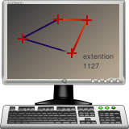

<div class="header"><h1 class="title">LibreCAD Computer Aided Drawing</h1></div>

<div class="main">

<div class="content"><ul>
	<li><em>LibreCAD</em>, is a an application for 2D Computer Aided Design (CAD).</li>
	<li>Create technical drawings such as building plans, interiors, mechanical parts or schemas and diagrams.</li>
</ul></div>

</div>


